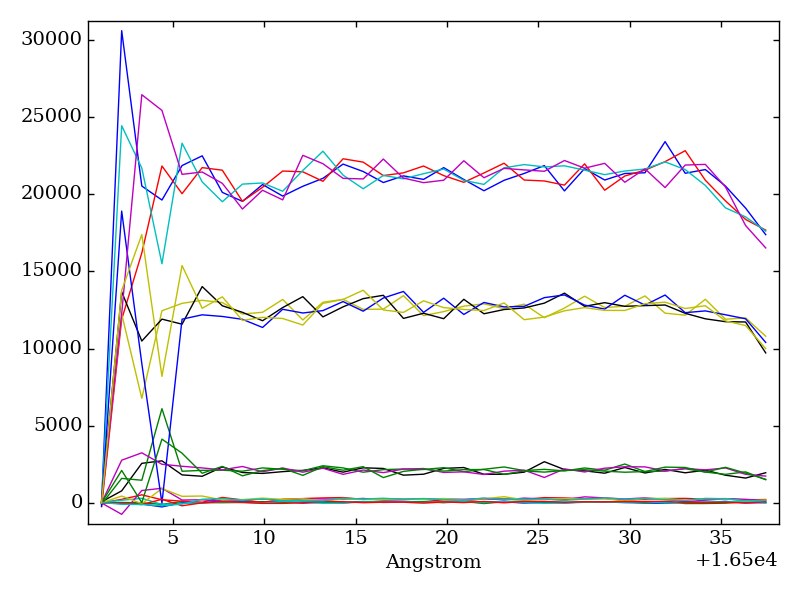
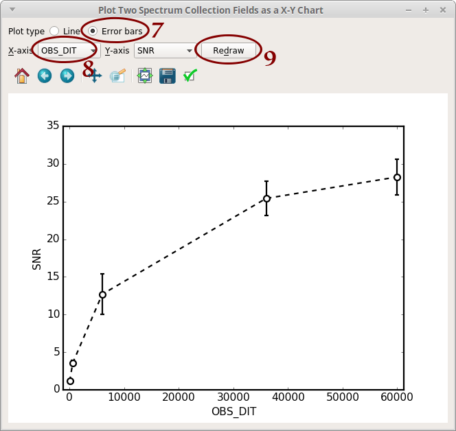

Adaptive Optics Systems Simulation Support (f311.aosss)¶
The aosss package helps to automatize the simulation of Adaptive Optics Systems.
Quick Start¶
List aosss applications¶
programs.py -p aosss
Graphical applications
----------------------
wavelength-chart.py ......... Draws chart showing spectral lines of interest,
spectrograph wavelength ranges, ESO atmospheric
model, etc.
Command-line tools
------------------
create-simulation-reports.py Creates HTML reports from WebSim-COMPASS output
files
create-spectrum-lists.py .... Create several .splist (spectrum list) files
from WebSim-COMPASS output files; groups spectra
that share same wavelength vector
get-compass.py .............. Downloads WebSim-COMPASS simulations
list-mosaic-modes.py ........ Lists MOSAIC Spectrograph modes
organize-directory.py ....... Organizes simulation directory (creates folders,
moves files, creates 'index.html')
Note All the programs above can be called with the --help or -h
option for more information
Find wavelength region for simulation¶
wavelength-chart.py

Figure – Lines with zero redshift
This application creates a chart stacking the MOSAIC spectrograph wavelength coverages and
an ESO Earth atmospheric model. This may serve either as a reference to MOSAIC wavelength invervals for each
mode (on this, see also list-mosaic-modes.py) or to verify the Earth atmospheric emission/trasmission
in a wavelength region of observational interest.
It is also possible to inform a redshift so that the chemical lines will be accordingly displaced:

Figure – z=3.5
Download simulation results¶
The following example assumes that simulations coded from 1700 to 1721 already finished on the WebSim-COMPASS server.
get-compass.py is a Python script based on get-compass.sh which can be downloaded from the
WebSim-COMPASS webpage. The former enhances the latter in which:
- It can download several simulations in a single command
- It is possible to specify the “stage” of the simulation pipeline to download results from. For example, it is possible to download only the “spintg” file, skipping the large data cubes from intermediary stages.
get-compass.py 1700-1721 --stage spintg
will download results for simulations C001700, C001701, ...,
C001721 into the local directory, after which you will see files
C*.fits, C*.par, C*.out
Organize simulation results¶
Group resulting spectra in a single file¶
This step is required for later analysis using splisted.py
The following command will group all files “C*_spintg.fits” into a single ”.splist” (Spectrum List) file,
which can later be opened using splisted.py
$ create-spectrum-lists.py
.
.
.
[INFO ] Created file './group-spintg-00-C001700-C001721.splist'
[INFO ] Created file './group-spintg-01-C001712-C001712.splist'
Create reports (optional)¶
This step creates HTML pages (one for each simulation) that help to navigate through the simulation results.
create-simulation-reports.py 1700-1721
Organize the directory¶
At this point, the current directory has a large number of files (”.fits”, ”.html”, ”.png”, etc.), whereas for our analysis, only the ”.splist” file is required.
organize-directory.py will:
- create a directory named “raw” where it will copy ”.fits”, ”.par” and ”.out” files
- create a directory named “reports” where it will copy ”.html” and ”.png” files. In addition, it will create a file “index.html” that will serve as an index for the ”.html” files
organize-directory.py
.
.
.
[INFO ] - Move 108 objects
[INFO ] - Create 'reports/index.html'
Continue (Y/n)?
Browse through reports¶
cd reports
xdg-open index.html
will open file “index.html” in browser

Figure – Reports index
Edit Spectrum List file¶
If you types the commands above to visualize reports, you will need to go back one directory level:
cd ..
Now open the Spectrum List Editor (part of the f311 package):
splisted.py group-spintg-00-C001700-C001721.splist
In the following steps, we will:
- Plot the spectra
- Calculate the Signal-to-noise ratio (SNR)
- Plot the Detector Integration Time (DIT) vs the SNR
- Select all the spectra: click inside the table, then press Ctrl+A

- Click on “Plot Overlapped”. A plot window opens. From this plot, we can see that the region 16508-16534 seems to be free of atmospheric contamination. You may close the plot window

- Click on “To Scalar”. Another window opens
- Type “ToScalar_SNR(16508, 16534)”
- Click on “OK”

- Notice that a new column “SNR” appear in the table. Click on “X-Y Plot”

- Select “Error bars”
- Select “OBS_DIT”
- Click on “Redraw”
